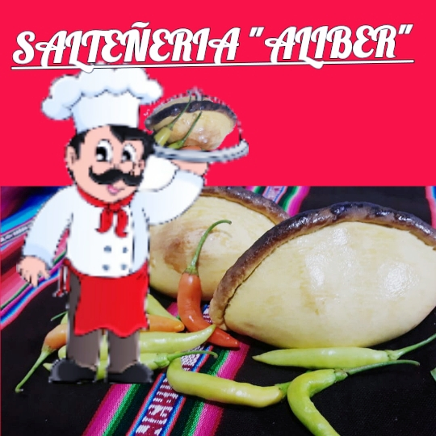

CONTACTO
Direccion: C/Santa Cruz, zona(Rosario)email: aliber12@hotmail.com
Telefono , celular: 2218189 | 67072355
pagina WEB: http://aliber1.byethost16.com/
email: aliber12@hotmail.com
Telefono , celular: 2218189 | 67072355
pagina WEB: http://aliber1.byethost16.com/
Lamicro empresa "ALIBER" dedicado a la produccion y comercializacion de productos con el fin de poder satisfacer las necesidades de los clientes de al modo que se vio en la necesidad de poder ampliar su mercado
La micro empresa "ALIBER" se fundo en los años 2000 por los señores propietarios en sus primeros pasos se encontraba ubicado en la calle mercado, gracias a la aceptabilidad de las personas se amplio el lugar de ambiente fisico. siempre ofreciendo los productos de calidad y con la garantia que el cliente en general se merece.
Se tomo experiencia en las empresas: Eli´s , Gayta , Hotel radison , Hotel gloria y demas empresas.
se implemento las medidas de Bioseguridad por el contagio que atrabezamos actual mente a nivel nacinal e internacinal, de tal modo que se quiere brindar un mejor producto terminado al cliente para el comsumo y la aceptabilidad de la misma para poder creser como micro empresa y poder llegar a ser industrializado.